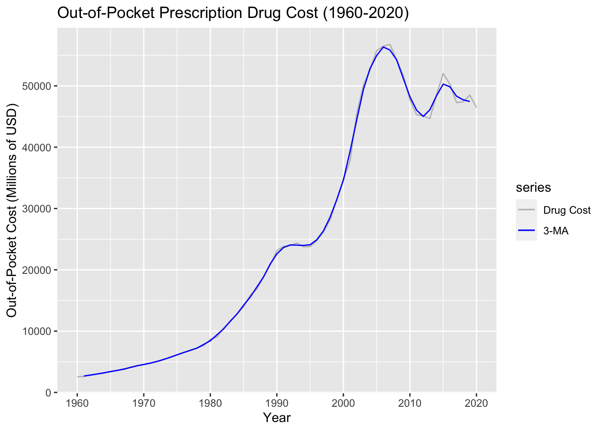
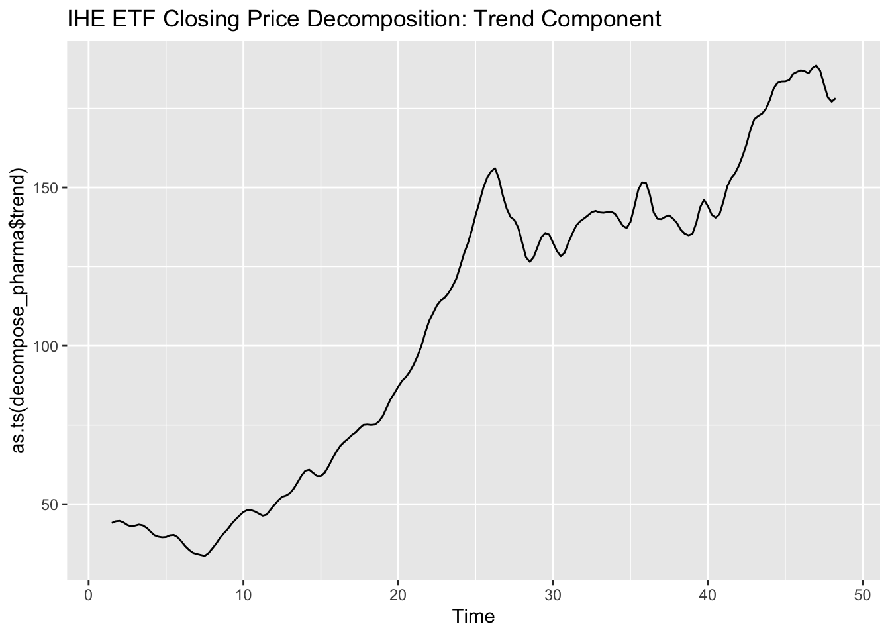

Code
library(tidyverse)
library(tidyquant)
library(ggplot2)
library(forecast)
library(astsa)
library(xts)
library(tseries)
library(lubridate)
library(plotly)
library(kableExtra)
library(dplyr)In this section, I will be performing exploratory data analysis on two datasets to begin to answer the questions listed out in the Guiding Questions for Analysis in my Introduction to this project:
To start, I will read in and clean the data before moving on to EDA.
library(tidyverse)
library(tidyquant)
library(ggplot2)
library(forecast)
library(astsa)
library(xts)
library(tseries)
library(lubridate)
library(plotly)
library(kableExtra)
library(dplyr)I am removing the last 10 rows of this dataset, because they represent predicted expenditures rather than the actual captured historical expenditures that I would like to use in my analysis.
drug = read.csv("datasets/nhe_drug.csv")
drug = head(drug, -10)
head(drug) Type.of.Service Year Total.Expenditures Out.of.Pocket
1 Prescription Drug Expenditures 1960 2,676 2,570
2 Prescription Drug Expenditures 1961 2,718 2,596
3 Prescription Drug Expenditures 1962 3,029 2,890
4 Prescription Drug Expenditures 1963 3,159 3,007
5 Prescription Drug Expenditures 1964 3,347 3,141
6 Prescription Drug Expenditures 1965 3,715 3,446
Health.Insurance Private.Health.Insurance Medicare Medicaid..Title.XIX.
1 37 33 - -
2 40 36 - -
3 44 40 - -
4 44 40 - -
5 80 76 - -
6 125 122 - -
Other.Health.Insurance Other.Third.Party.Payers.and.Programs
1 4 68
2 4 82
3 4 95
4 4 108
5 4 126
6 3 144Next, I need to turn the expenditure numbers from characters to numbers so that they can be used in time series analysis.
drug$Total.Expenditures = as.numeric(gsub(",","",drug$Total.Expenditures))
drug$Out.of.Pocket = as.numeric(gsub(",","",drug$Out.of.Pocket))
drug$Health.Insurance = as.numeric(gsub(",","",drug$Health.Insurance))
drug$Private.Health.Insurance = as.numeric(gsub(",","",drug$Private.Health.Insurance))
drug$Medicare = as.numeric(gsub(",","",drug$Medicare))
drug$Medicaid..Title.XIX. = as.numeric(gsub(",","",drug$Medicaid..Title.XIX.))
drug$Other.Health.Insurance = as.numeric(gsub(",","",drug$Other.Health.Insurance))
drug$Other.Third.Party.Payers.and.Programs = as.numeric(gsub(",","",drug$Other.Third.Party.Payers.and.Programs))Before turning the dataset into a time series object, I want to create some basic plots to look at the data for my variable of choice: Out-of-pocket prescription drug costs.
GGPlot2 Line and Column Charts:
drug.plot = ggplot(data=drug, aes(x=Year, y=Out.of.Pocket))+
geom_line()+
xlab("Year") + ylab("Out of Pocket Cost (Millions of USD)")+
theme_minimal()
drug.plot
ggplot(data=drug, aes(x=Year, y=Out.of.Pocket))+
geom_col()+
xlab("Year") + ylab("Out of Pocket Cost (Millions of USD)")+
theme_minimal()
Next, I want to turn the data a time series object for further analysis, using the “Year” variable as the time-step and “Out of Pocket” costs as the variable we are taking a look at.
To start, I need to convert the “Year” categories to date types that can be used for time series analysis:
drug$Year = as.Date(paste0(drug$Year, "-12-31"))
class(drug$Year)[1] "Date"The plot below looks the same, but now it is a time series object.
drug.ts = subset(drug, select = Out.of.Pocket)
drug.ts = ts(drug.ts, start=1960, frequency = 1)
autoplot(drug.ts, main = "Consumer Out-of-Pocket Prescription Drug Costs (1960-2020)", xlab = "Year", ylab = "Out-of-Pocket Cost (Millions of USD)")First, I will take an additive decomposition to separate the out-of-pocket prescription drug costs time series into its different components.
Below, we can see that while there isn’t a seasonal component, there is absolutely an upward trend present over time in this data.
add_drugts = ts(drug.ts, frequency = 4)
descompose_drug = decompose(add_drugts, "additive")
autoplot(descompose_drug)
autoplot(as.ts(descompose_drug$trend), main = "Out-of-Pocket Cost Decomposition: Trend Component")
However, when extracting the seasonal component, we can see that there is no pattern that changes between years. This makes sense, as we are not looking at monthly or weekly data that would be able to suggest that costs might be increased in one season or decreased in another. We cannot determine a seasonality component by looking at years alone. However, the next dataset I am exploring for this project uses monthly data, meaning that seasonality is possible and may have to be dealt with.
autoplot(as.ts(descompose_drug$seasonal), main = "Out-of-Pocket Cost Decomposition: Seasonal Component")Next, I will be creating a lag plot of my prescription drug cost dataset. The purpose of this portion of exploratory data analysis is to check for randomness or non-random structures in the dataset, outliers, potential model suitability, correlation, and seasonality. Even though seasonality was pretty much ruled out through decomposition, other forms of lag and autocorrelation can still exist within the data that need to be explored.
Below, we can see that the highest autocorrelation is at lag 1, followed by lag 2, with each increasing lag showing less and less autocorrelation. However, even though there is no seasonality, there is an interesting pattern that forms when looking at the different time steps. The first 20 years of the data (about 1960-1980) all share a similar pattern, the next 20 years (about 1980-2000) share a similar pattern, and then finally the next 20 years (about 2000-2020) share a similar pattern.
Overall, the data shows a positive linear pattern, suggesting positive autocorrelation.
gglagplot(drug.ts, do.lines = FALSE) + xlab("Lags") + ylab("Yi") + ggtitle("Lag Plot: Out-of-Pocket Drug Costs") + theme(axis.text.x = element_text(angle=45, hjust = 1))
The next important step of the EDA lag process is determining if the time series is stationary or non-stationary. In short, a stationary time series is one in which there is no trend, no seasonality, and constant variance over time. Seasonality is an important component of developing a predictive time series model, and non-stationary time series must be transformed to be stationary before proceeding to model development and fitting.
We can determine if the dataset is stationary or not by looking at the ACF and PACF plots below.
Below, we can see visually that the dataset is not stationary, as almost all of the lags fall outside of of the ACF intervals. To confirm the lack of stationarity, we will perform the Augmented Dickey-Fuller Test next.
ggAcf(drug.ts, 48, main = "ACF: Prescription Drug Cost TS")
ggPacf(drug.ts, 48, main = "PACF: Prescription Drug Cost TS")Below, we can see that the results of the ADF test confirm a lack of stationarity, as the null hypothesis of non-stationarity cannot be rejected.
tseries::adf.test(drug.ts)
Augmented Dickey-Fuller Test
data: drug.ts
Dickey-Fuller = -2.5484, Lag order = 3, p-value = 0.353
alternative hypothesis: stationaryAlthough this dataset is very clean already, there are a few things to do to ensure it is in the correct format for analysis.
pharma = read.csv("datasets/IHE.csv")
head(pharma) Date Open High Low Close Adj.Close Volume
1 2007-01-01 53.33 55.65 53.00 55.60 44.05783 281100
2 2007-02-01 55.79 56.06 53.51 54.00 42.78997 495100
3 2007-03-01 53.10 54.10 51.99 53.64 42.50471 492400
4 2007-04-01 53.97 60.00 53.81 57.69 45.84257 250300
5 2007-05-01 57.57 59.15 57.23 58.54 46.51800 275100
6 2007-06-01 58.52 58.71 55.61 55.99 44.49168 318000Now that the data is read in, I will convert the “Date” variable to a date-type object and then use the monthly average adjusted closing price as my variable of interest for time series analysis and modeling.
pharma$Date = as.Date(pharma$Date)Below, we can see the initial line plot of the changes in the adjusted closing price of the IHE pharmaceutical stock ETF since its creation in 2007.
pharm.plot = ggplot(pharma, aes(x=Date))+
geom_line(aes(y=Adj.Close))+xlab("Year")+ylab("Adjusted Closing Price")+theme_minimal()
pharm.plot
Next, I will turn this stock price dataset into a time series format for the remainder of the analysis.
pharma.ts = subset(pharma, select = Adj.Close)
pharma.ts = ts(pharma.ts, start=c(2007,1),frequency = 12)
autoplot(pharma.ts, main = "U.S. Pharmaceuticals ETF (IHE) Performance (2007-2022)", xlab = "Date", ylab = "Adjusted Closing Price")As with the previous dataset, I will take an additive decomposition to separate the IHE ETF closing price time series into its different components.
Although we see a clear upward trend, there doesn’t really appear to be any seasonality in the adjusted closing prices of the ETF stock.
add_pharma = ts(pharma.ts, frequency = 4)
decompose_pharma = decompose(add_pharma, "additive")
autoplot(decompose_pharma)
autoplot(as.ts(decompose_pharma$trend), main = "IHE ETF Closing Price Decomposition: Trend Component")autoplot(as.ts(decompose_pharma$seasonal), main = "IHE ETF Closing Price Decomposition: Seasonal Component")Next, I will be creating another lag plot for my IHE ETF closing prices dataset to determine if any autocorrelation is present that may have impacts to stationarity.
As can be seen below, there is very high positve autocorrelation present in these lag plots. Even though the correlation becomes weaker as the number of lags observed increases, even lags as high as lag 16 are showing a positive linear pattern suggesting high autocorrelation.
gglagplot(pharma.ts, do.lines = FALSE) + xlab("Lags") + ylab("Yi") + ggtitle("Lag Plot: IHE ETF Adjust Closing Prices") + theme(axis.text.x = element_text(angle=45, hjust = 1))
To confirm what appears to be a clear lack of stationarity present in the lag plot above, we can plot the ACF and PACF of the time series dataset.
As expected, the results of the ACF plot show a very clear lack of stationarity in the data, seen by the fact that all lags fall outside of the boundaries even as they are decreasing. As with the prescription drug cost dataset, this means that the data will need to be transformed with detrending or differencing before modeling can be done on the data.
ggAcf(pharma.ts, 48, main = "ACF: IHE ETF TS")ggPacf(pharma.ts, 48, main = "PACF: IHE ETF TS")Although the ACF plot is the authority when it comes to determining stationarity or lack thereof, the results of the ADF test below also prove that the IHE ETF dataset is not stationary, as the null hypothesis of non-stationarity cannot be rejected due to a high p-value.
tseries::adf.test(pharma.ts)
Augmented Dickey-Fuller Test
data: pharma.ts
Dickey-Fuller = -2.1149, Lag order = 5, p-value = 0.528
alternative hypothesis: stationary